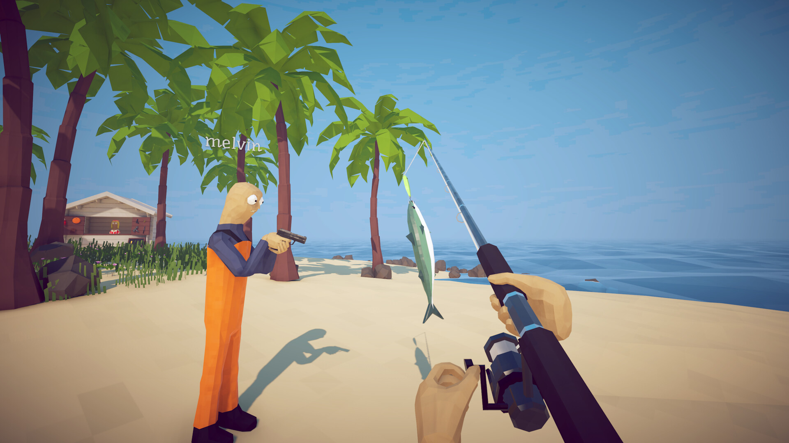
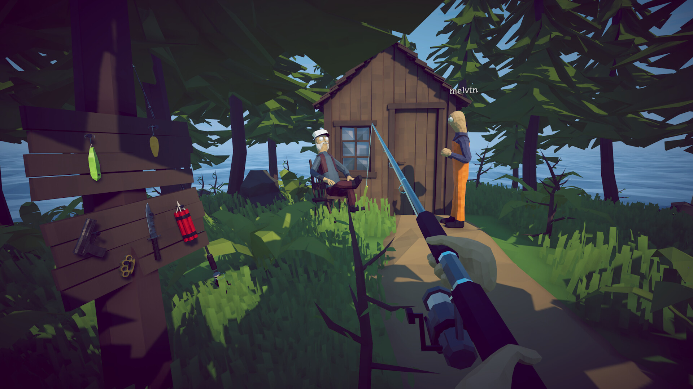
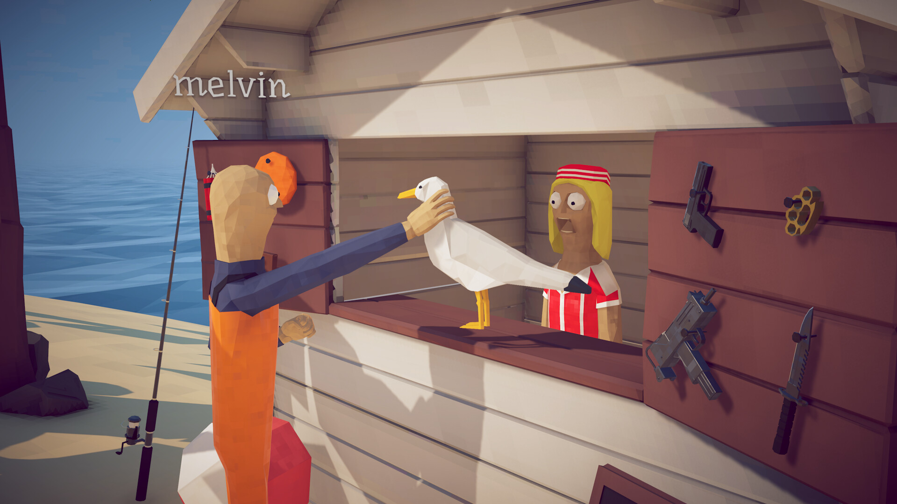
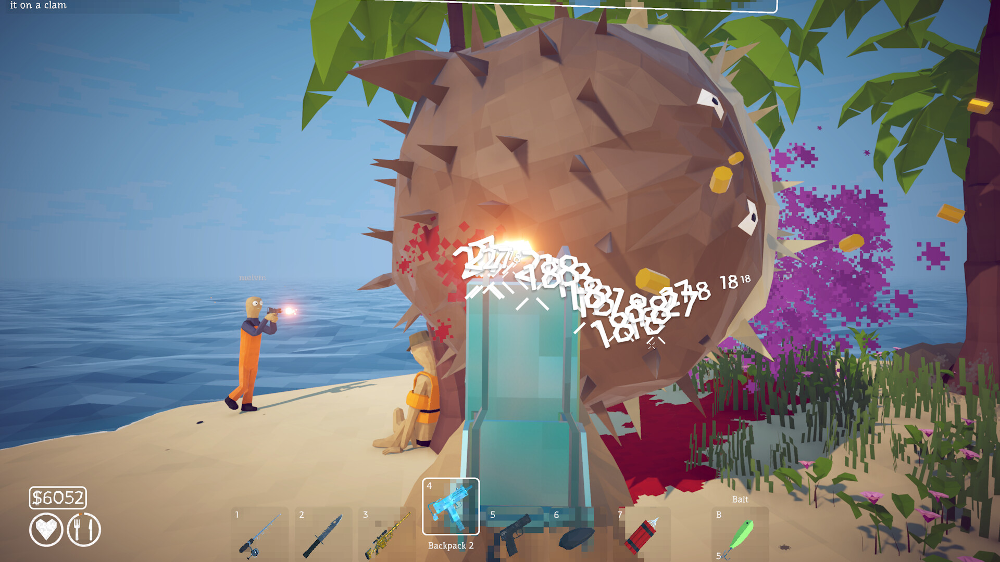
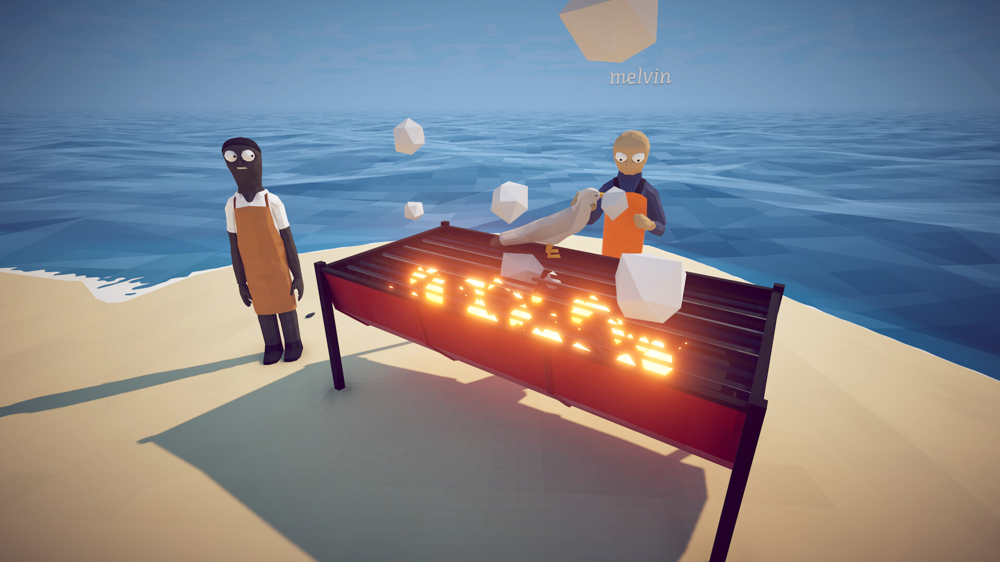
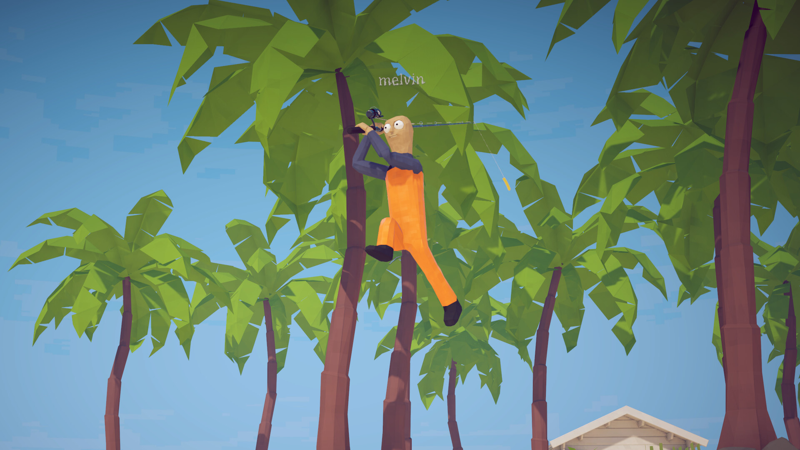
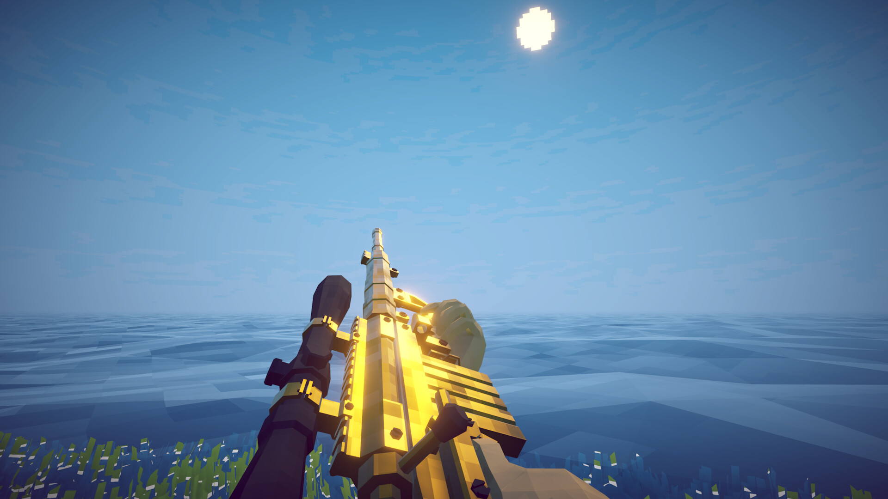

낚시게임추천 하우투피쉬(낚시방법) 보스11종공략과 반응 총정리
낚시 방법, 영문 이름으로는 하우투피쉬(How to Fish)라는 게임이 지난 8월 20일에 스팀에서 정식 출시했는데요. 데이즈드 게임즈(Dazed Games)가 만들고 8,400원이라는 부담 없는 가격에, 리뷰 47,191건 중 94.95%가 긍정 평가를 남길 만큼 반응이 좋더라고요. 이번 글에서는 이 게임이 어떤 방식으로 진행되는지, 확인된 보스 11종은 각각 어떻게 공략하면 되는지, 그리고 실제 반응은 어떤지까지 한 번에 정리해볼게요.

스팀 공식 키비주얼이에요. 낚싯대 든 인물이랑 무기 든 인물이 같이 있는 게 이 게임 성격을 잘 보여주죠.
이미지: 낚시 방법 스팀 스토어 · 네이버 본문엔 받아서 재업로드 권장
낚시 방법이 대체 뭔 게임이냐면
한마디로 말하면, 물리 기반 낚시 시뮬레이터에 산탄총 전투와 카지노까지 뒤섞인 협동 서바이벌 게임이에요. 설정부터가 특이한데요, 술 마시고 보트를 몰다가 실수로 작은 섬에 들이받아 좌초된 상황에서 시작해요. 집에 돌아가려면 결국 낚시하는 법을 배워야 하는 거죠. 장비도 무기도 없는 빈손으로 시작해서, 물고기를 낚고 팔아 번 돈으로 장비와 무기를 사고, 퀘스트를 깨고 보스를 잡아가며 새로운 섬으로 넘어가는 구조예요. 공식 장르는 액션·캐주얼·인디·시뮬레이션이고, 스토어 태그에는 협동(Co-Op)·낚시·슈터·물리·카투니 같은 키워드가 함께 붙어 있어요. 출시 초반엔 최대 4명까지 온라인 협동이 가능했는데, 패치로 지금은 최대 8명까지 늘어나서 혼자보다는 여럿이 왁자지껄하게 즐기기 좋게 설계된 느낌이더라고요.
기본 조작은 이렇게 돌아가요
캐스팅은 좌클릭을 눌러 파워를 충전한 뒤 놓으면 되고, 릴링은 입질이 왔을 때 좌클릭을 홀드하면서 장력을 조절하는 방식이에요. 캐스팅할 땐 45도 각도로 던지는 게 기본이고, 홀드를 오래 할수록 더 멀리 날아가요. 릴링 중엔 장력이 위험 구간까지 올라가면 살짝 놓았다가 다시 홀드하는 식으로 줄을 지켜야 하고요. 낚은 물고기나 보스는 그냥 잡히는 게 아니라 직접 무기로 처치해야 하는데, 초반엔 칼이나 너클 같은 근접무기로 시작해서 산탄총·기관단총을 거쳐 저격총·돌격소총까지 순서대로 강화해나가는 구조예요.

이렇게 릴을 감아서 물고기를 끌어올리는 장면이에요. 낚싯대 하나 들고 있는데도 긴장감이 꽤 있어 보이죠.
이미지: 낚시 방법 스팀 스토어 · 네이버 본문엔 받아서 재업로드 권장
섬은 어떤 순서로 넘어가나요
등대 섬 → 숲 섬 → 사막 섬 → 바위 섬 → 화산 섬, 이렇게 5단계가 고정된 순서로 이어져요. 섬마다 진행 방식이 똑같은 사이클로 돌아가는데요, NPC 퀘스트를 받아서 전용 미끼를 구하고, 그 미끼로 보스를 소환해서 잡고, 보스한테서 나온 전리품을 다시 NPC한테 가져다주면 다음 섬으로 가는 길이 열리는 식이에요.

등대 섬에서 만나는 NPC 멜빈이에요. 옆에 걸린 칼·권총·다이너마이트가 앞으로 쓸 무기들이겠죠.
이미지: 낚시 방법 스팀 스토어 · 네이버 본문엔 받아서 재업로드 권장
보스전 들어가기 전에 꼭 알아둘 규칙 3가지
보스는 전용 미끼가 있어야만 나타나고, 잡아도 고유 전리품을 NPC에게 전달해야 진짜로 끝나며, 시간제한도 있다는 걸 기억해두세요.
- 전용 미끼 필수 — 일반 미끼로는 보스가 아예 등장하지 않아요. 보스 등장 자체가 미끼에 달려있거든요, 섬마다 정해진 전용 미끼를 먼저 구해야 해요.
- 전리품 반납 — 보스를 처치하는 것만으론 부족하고, 일반 물고기가 아닌 고유 전리품(껍질·뼈·머리 등)을 해당 NPC에게 전달해야 다음 좌표가 열려요.
- 탈출 타이머 — 전투 중 제한 시간이 있어서, 시간 안에 못 끝내면 보스가 도망가거나 리셋돼요. 무기를 미리 업그레이드해두고 들어가는 게 안전해요.

잡은 걸 NPC한테 이렇게 직접 건네줘야 다음 단계가 열려요. 그냥 잡기만 하고 끝이 아니라는 거죠.
이미지: 낚시 방법 스팀 스토어 · 네이버 본문엔 받아서 재업로드 권장
보스는 몇 마리고, 어떻게 잡나요
확인된 보스는 총 11종이에요. 메인 스토리 경로를 완주하려면 결국 만나게 되는 5마리(스파이더 크랩·자이언트 피라냐·복어·알바트로스, 그리고 최종보스인 변이 보우헤드 고래)가 핵심이고, 나머지 6마리(선피시·올드 파이크·블루 샤크·참치·고블린 샤크·일반 보우헤드 고래)는 다음 보스를 부르거나 자금·조리 특전을 위해 만나는 보스들이에요. 이 중 참치와 일반 보우헤드 고래는 각각 알바트로스와 최종보스의 등장 조건이라 사실상 건너뛸 수 없고, 선피시·올드 파이크·블루 샤크·고블린 샤크는 몰라도 진행엔 지장 없어요. 표는 보스명(영문/한글)·등장 지역·소환 미끼(또는 조건)·공략법·팁, 이렇게 다섯 가지 기준으로 정리했어요.
| 보스명(영/한) | 등장 지역 | 소환 미끼·조건 | 공략법 | 팁 |
|---|---|---|---|---|
| Spider Crab 스파이더 크랩 (스토리) | 등대 섬 | 빈 맥주캔 미끼(맥주 구매→등대지기 전달) | 돌진·집게 공격이 빗나가면 기절, 그 틈에 근접무기(칼 등) 3~4타 | 칼 먼저 구매 권장. 처치 후 껍질을 등대지기에게 전달해야 보트 열쇠+레이더($10) 획득 |
| Sunfish 선피시 (미니보스) | 숲~화산 섬 랜덤 | 초급 보스 미끼(올드 파이크와 랜덤 공유) | 공격을 안 해서 권총으로 처치 | 스토리 진행과는 무관 |
| The Old Pike 올드 파이크 (미니보스) | 숲 섬 | 초급 보스 미끼 | 단순 꼬리치기, 산탄총으로 회피사격 | 자이언트 피라냐전 연습용 |
| Giant Piranha 자이언트 피라냐 (스토리) | 숲 섬 호수 | 변형 거머리 미끼(거머리 3마리 채집→NPC 전달) | 잔챙이 원거리 정리 후 도약공격 회피, 착지 시 집중공격 | 해골(뼈)을 NPC에 전달해야 사막 섬 오픈 |
| Blue Shark 블루 샤크 (미니보스) | 사막 섬 | 표준 보스 미끼 | 회전 돌진, 거리 유지하며 산탄총 | 처치 후 그릴 장인에게 전달하면 조리 기능 해금(판매가↑). 복어 전에 처치 권장 |
| Pufferfish 복어 (스토리) | 사막 섬 | 당근 미끼(멸종위기종 낚아 관광객 전달) | 부풀어 굴러오는 공격, 산탄총 2발 후 이동, 체력 절반 이하 시 독 장판 회피 | 지느러미를 관광객에 전달해야 바위 섬 오픈 |
| Tuna 참치 (사실상 필수) | 바위 섬 | 전문 보스 미끼(약 $1,200) | 좁은 지형 직선 돌진, 산탄총+탄약 업그레이드 | 처치 후 시체를 남겨둬야 함(판매·조리 금지, 알바트로스 소환용) |
| Albatross 알바트로스 (스토리) | 바위 섬 | 참치 시체 방치 시 등장 | 공중 원거리+배설물 공격, 엄폐물 뒤에서 저격총 | 머리를 NPC에 전달해야 화산 섬 오픈 |
| Goblin Shark 고블린 샤크 (미니보스) | 화산 섬 | 과학 보스 미끼(고가) | 돌격소총·기관단총, 용암 지형 회피 | 게임 내 최고가 어종(생물 약 $6,200, 조리 시 약 $9,300). 자금 마련용. 조리하면 판매가가 최대 1.5배까지 뛰는데(사막 그릴도 같은 배율이에요), 화산 섬 용암은 타이밍 실패로 태워서 0원 될 위험 없이 이 1.5배를 안전하게 챙길 수 있어서 이런 고가 어종엔 특히 짭짤해요 |
| Bowhead Whale 보우헤드 고래 (사전 처치) | 화산 섬 | 화산 어종 5마리 완료→물고기 양동이 | 공중 도약 내려찍기, 착지 후 이동+집중공격 | 시체(판매·조리 금지)를 분화구에 던지면 최종보스 등장 |
| Mutated Bowhead Whale 변이 보우헤드 고래 (최종보스) | 화산 섬 분화구 | 고래 시체 투척 | 용암 낙하공격 회피, 착지 후 돌격소총 집중공격 | 처치 시 스토리 목표 달성(엔딩) |
보스마다 등장 조건이랑 미끼가 다 다르니까, 표를 저장해두고 섬 넘어갈 때마다 하나씩 확인하면서 진행하면 헷갈릴 일이 확 줄어들 것 같네요.

이런 가시투성이 보스한테 총을 갈기는 장면이네요. 데미지 숫자 뜨는 거 보면 은근 손맛이 있어 보여요.
이미지: 낚시 방법 스팀 스토어 · 네이버 본문엔 받아서 재업로드 권장
보스만 잡고 끝이 아니라, 잡은 재료로 뭘 해먹을 수 있는지도 궁금하실 것 같아요.

그릴 장인한테 재료 넘기면 이렇게 구워주는 모양이에요. 표에 있는 블루 샤크 팁이랑 연결되는 장면이죠.
이미지: 낚시 방법 스팀 스토어 · 네이버 본문엔 받아서 재업로드 권장
빙봉이라는 존재도 있던데, 보스일까요
빙봉은 이번에 정리한 11종 보스에는 들어가지 않는, 아직 정체가 확실하지 않은 존재예요. 사막 섬 야자수 근처에서 코코넛(약 350달러) 미끼로 부를 수 있다고 하는데, 일부 공략 사이트(Game8)는 이걸 보스로 분류하는 반면 다른 사이트(how-to-fish.wiki)는 정식 보스는 아니고 다른 게임(Peak)과의 크로스오버로 등장하는 히든 크리처로 따로 분류하고 있어요. 개발사가 공식적으로 뭐라고 부르는지, 체력이 얼마인지도 확인되지 않았는데요, 커뮤니티에서 도는 수치일 뿐이라 그대로 믿기는 어려워요. 그래서 이번 정리에는 별도 항목으로만 짧게 남겨둘게요.

이런 야자수 근처에서 코코넛을 미끼로 쓰면 빙봉이 나온다고 하더라고요. 정체는 아직 미스터리예요.
이미지: 낚시 방법 스팀 스토어 · 네이버 본문엔 받아서 재업로드 권장
실제 반응은 어떨까요
여러 리뷰와 영상을 종합해보면, '조용한 낚시 게임인 줄 알았는데 산탄총 전투에 카지노까지 있는 혼돈의 협동 게임'이라는 평가가 자주 보이더라고요. 저는 아직 직접 플레이해본 건 아니고 공개된 리뷰와 영상을 두루 살펴본 정도인데요, 협동 플레이의 재미와 트릭샷 시스템, 가격 대비 만족도를 좋게 평가하는 후기가 많았어요. 출시 초반엔 48시간 만에 누적 플레이어 100만 명을 넘겼다는 소식도 여러 매체에서 다뤄질 정도로 화제였고요.
- 출시 초반 화면 버그가 있었다는 지적
- 친구 초대 기능에서 오류가 발생했다는 후기
- 폭발물을 과하게 쓰면 성능이 떨어진다는 의견
이런 이슈들도 함께 언급되고 있어서, 완벽하다기보다는 초반 잔손질이 필요한 상태로 보여요.

이런저런 이슈에도 사람들이 계속 즐기는 걸 보면 매력은 확실한가 봐요.
이미지: 낚시 방법 스팀 스토어 · 네이버 본문엔 받아서 재업로드 권장
자주 묻는 질문
Q. 낚시 방법은 한국어를 지원하나요?
네, 지원 언어 16개 전체에 한국어가 포함돼 있고 자막뿐 아니라 음성 더빙까지 지원해요. 다만 실제 번역이 얼마나 자연스러운지는 아직 확인된 정보가 없어서, 이 부분은 직접 플레이하면서 느껴보시는 게 정확할 것 같아요.
Q. 혼자서도 보스를 잡을 수 있나요?
혼자서도 가능은 한데, 여러 리뷰에서 솔로 플레이일 때 보스 난이도가 확 올라간다는 얘기가 꽤 있더라고요. 그래서 가능하면 협동 모드로 같이 가는 걸 추천하는 분위기예요. 참고로 출시 초반엔 4명까지였는데, 패치 이후로는 최대 8명까지 함께 할 수 있게 늘었답니다.
Q. 확률형 아이템이 있나요?
리얼머니로 결제하는 확률형 가챠는 없어요. 다만 스팀 공식 콘텐츠 고지에 '물고기로 하는 도박 요소(실제 현금 아님)'가 안내돼 있는데, 게임 내 재화로 하는 도박성 미니게임 정도로 보면 된답니다.
아직 낚시 방법을 다룬 봄딩 글이 없어서 이번이 첫 소개예요. 다음엔 그릴 활용법이나 트릭샷 꿀팁으로 이어서 써볼게요.
참고한 곳
· 낚시 방법(How to Fish) 스팀 스토어 페이지
· Game8 - 보스 전체 목록
· how-to-fish.wiki - 보스 공략 가이드
2026.09.02 기준
낚시 방법 정리
정리하면, 낚시 방법은 5개 섬을 돌면서 미끼로 보스를 소환해 잡고 전리품을 넘기며 진행하는 협동 낚시 게임이고, 확인된 보스는 11종, 빙봉은 아직 정체가 확실하지 않은 별도 존재예요. 가격도 부담 없고, 패치로 최대 8명까지 함께 즐길 수 있게 넓어진 만큼, 친구들이랑 한 번 들여다보시면 좋을 것 같아요.